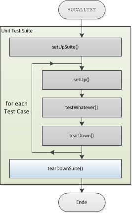

tearDownSuite();
Used to tear down a test suite after the last test case has been executed.
This procedure can be used to remove test data or deallocate resources after the
last test case has been executed.

Cobol Syntax:
PROGRAM-ID. TEARDWNSTE.